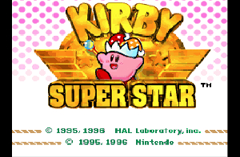
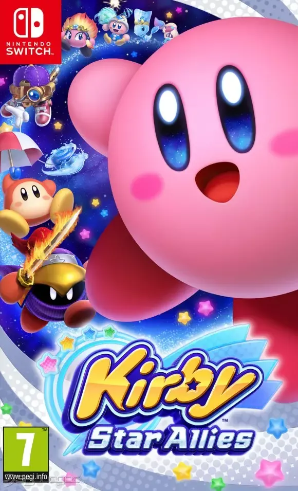
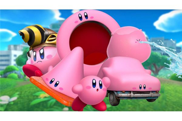

1992: Kirby's Dream Land (Game Boy)
El primer juego de Kirby, diseñado por Masahiro Sakurai, fue concebido como un título sencillo y accesible para Game Boy. Aunque inicialmente se llamó "Popopo", Shigeru Miyamoto decidió cambiarlo a Kirby. Aquí se establecieron las bases: la capacidad de volar y tragar enemigos, aunque las habilidades de copia aún no existían.
Innovaciones clave
- Introducción de Kirby y su mundo, Dream Land.
- Mecánica de aspirar y escupir enemigos, y la capacidad de volar.
- Diseño de niveles amigable y accesible para todos los públicos.
1993: Kirby's Adventure (NES)
Considerado por muchos como el verdadero punto de partida de la esencia de Kirby, esta entrega para NES introdujo por primera vez las icónicas Copy Abilities. Al tragar enemigos específicos, Kirby podía adoptar sus poderes y usarlos para resolver puzles o derrotar a otros adversarios, multiplicando las posibilidades de juego.
Novedades destacadas
- Implementación de las legendarias Copy Abilities (más de 20).
- Gráficos coloridos y detallados que explotaban el potencial de NES.
- Un mapamundi con fases interconectadas y minijuegos.
1996: Kirby Super Star (SNES)

Este título es una recopilación de ocho juegos más pequeños, cada uno con un estilo de juego diferente, desde plataformas tradicionales hasta carreras y luchas de jefes.
Introdujo el sistema de ayuda, donde Kirby podía convertir a los enemigos en aliados controlados por la IA o un segundo jugador, añadiendo una capa cooperativa.
Aportaciones importantes
- Ocho juegos en uno, ofreciendo una gran variedad de experiencias.
- Sistema de Ayudantes (Helper System) para juego cooperativo.
- Gráficos y animaciones pulidas, mostrando el potencial de SNES.
2004: Kirby & The Amazing Mirror (Game Boy Advance)

Este título fue un experimento clave en la estructura de la saga, llevando la acción a un género más de "metroidvania" o exploración de mundo abierto. En lugar de niveles lineales, Kirby exploraba un gran espejo interconectado. Además, introdujo la mecánica de los "Kirbys clonados", ya que Kirby se dividía en cuatro copias de diferentes colores, un precursor de las mecánicas cooperativas futuras.
Aportaciones importantes
- Estructura No Lineal: El mundo del juego está interconectado y puede explorarse libremente.
- Cooperativo Local: Kirby puede invocar clones (Dark Kirbys) para el multijugador o para resolver puzles.
- Introducción de nuevas Copy Abilities que jugaban con la exploración del mapa.
2010: Kirby's Epic Yarn (Wii)
Kirby's Epic Yarn marcó un cambio estético radical: todo el mundo, incluyendo a Kirby, está hecho de hilos y tela. En este título, Kirby no puede aspirar o copiar poderes de forma tradicional. En su lugar, utiliza su cuerpo de hilo para transformarse en objetos (coches, submarinos, paracaídas) y agarrar el entorno. Fue un enfoque innovador centrado en el diseño de niveles y el cooperativo.
Innovaciones clave
- Estilo Artístico Único: El mundo de tela revolucionó el aspecto visual de la saga.
- Mecánica de Hilo: Kirby usa un látigo de hilo para interactuar, sin aspirar enemigos.
- Transformaciones: Nuevas habilidades basadas en la forma del hilo (coche, cohete), lo que anticipó el Modo Transmorfo de Tierra Olvidada.
- Juego Cooperativo: Integración fluida del juego con el Príncipe Fluff, permitiendo dos jugadores.
2011: Kirby's Return to Dream Land (Wii)

Tras la experimentación de Epic Yarn, este título significó el regreso triunfal de Kirby a las plataformas 2D tradicionales y a las Copy Abilities. El juego se centró fuertemente en el multijugador cooperativo local para hasta cuatro jugadores, permitiendo a los amigos jugar como Kirby, Meta Knight, Rey Dedede o Waddle Dee.
Además, introdujo las Súper Habilidades, versiones absurdamente poderosas de los poderes normales, necesarias para abrir nuevos caminos y avanzar en el lore.
Aportaciones importantes
- Regreso al 2D Clásico: Volvió a las Copy Abilities tras Epic Yarn.
- Multijugador Cooperativo Fuerte: Cuatro jugadores simultáneos con personajes con habilidades únicas.
- Súper Habilidades: Introducción de versiones ultra-poderosas de los poderes, un concepto que sería reutilizado en futuros juegos.
2014: Kirby: Triple Deluxe (Nintendo 3DS)

El debut de Kirby en la Nintendo 3DS aprovechó el efecto 3D estereoscópico para añadir una dimensión de profundidad a los niveles 2D, donde los enemigos y objetos saltaban entre el fondo y el primer plano. La gran novedad fue la Hipernova (Hypernova), una súper-habilidad temporal que permitía a Kirby absorber objetos gigantescos y partes del escenario, llevando la mecánica de tragar a un extremo cómico.
Innovaciones destacadas
- Efecto 3D: Uso activo de la profundidad para crear puzles y enemigos en el fondo/primer plano.
- Habilidad Hipernova: La habilidad temporal para aspirar grandes elementos del escenario, un precursor conceptual del Modo Transmorfo.
- Modos Adicionales: Introducción de Kirby Fighters y Dedede's Drum Dash, diversificando el contenido.
2016: Kirby: Planet Robobot (Nintendo 3DS)

Este título es notable por introducir la Armadura Robobot, una poderosa armadura robótica que Kirby puede pilotar. Al igual que Kirby, la Armadura podía escanear y copiar las habilidades de los enemigos, transformándose en distintas variantes (Modo Sierra, Modo Jet, etc.). Esta nueva capa de jugabilidad a través de la Armadura fue fundamental para resolver puzles y batallas de jefes a mayor escala.
El juego mantiene la jugabilidad 2D, pero aprovecha la profundidad de la 3DS para que la Armadura interactúe con el fondo y el primer plano.
Aportaciones importantes
- Mecánica Robobot: Introducción de la armadura que puede copiar habilidades, expandiendo la jugabilidad.
- Temática Única: Ambientación en un mundo invadido por tecnología y robots.
- Uso del 3D: El juego utiliza la profundidad para la Armadura Robobot.
2018: Kirby Star Allies (Nintendo Switch)

Kirby Star Allies marcó el debut de la saga en HD en Nintendo Switch. El juego perfeccionó y expandió el multijugador cooperativo introducido en Return to Dream Land mediante la mecánica de Amigos Estrella. Kirby lanza corazones a los enemigos para convertirlos en aliados controlados por la IA o por otros jugadores (hasta cuatro).
La clave de este juego reside en la combinación de habilidades (por ejemplo, Espada + Fuego = Espada de Fuego) para resolver puzles y derrotar a enemigos, promoviendo la experimentación continua.
Innovaciones destacadas
- Mecánica de Amigos Estrella: Reclutar hasta tres enemigos para que se unan al equipo.
- Combinación de Habilidades: Permite mezclar dos elementos (fuego, agua, viento, etc.) para crear nuevos poderes y efectos.
- Amigos de Ensueño: Introduce personajes jugables de toda la historia de Kirby (como Meta Knight, Rey Dedede, y personajes clásicos de los 90).
- Primer Kirby en HD: Gráficos vibrantes aprovechando la capacidad de Switch.
2022: Kirby y la Tierra Olvidada (Nintendo Switch)

Marcando un hito en la franquicia, "Kirby y la Tierra Olvidada" supuso el salto completo de la saga a las 3D. Ambientado en un mundo postapocalíptico
lleno de ruinas de una civilización olvidada, el juego introdujo el ingenioso "Modo Transmorfo",permitiendo a Kirby engullir objetos grandes (como coches o máquinas expendedoras) para obtener nuevas habilidades.
Innovaciones destacadas
- Primer juego principal de Kirby en 3D, explorando niveles con profundidad y libertad de movimiento.
- Introducción del Modo Transmorfo para interacciones únicas con el entorno.
- Mundo postapocalíptico vibrante y misterioso, con Waddle Dee Town como base central.
- Nuevas evoluciones para las Copy Abilities, aumentando su poder y versatilidad.